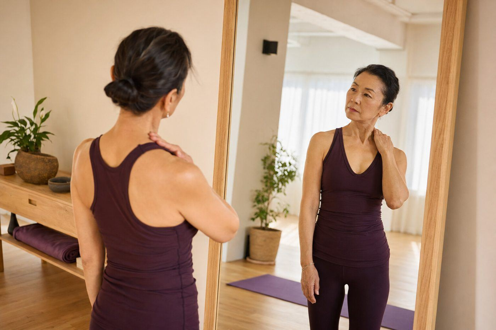

脖子後面凸起是富貴包嗎？只看外觀能判斷嗎？

綁頭髮時摸到脖子後面一塊凸起。手機一搜，有人說是低頭，有人說按一按就會散。看到的答案愈多，反而愈不知道該從哪裡開始。
「富貴包」是日常俗稱，可能混指脖後脂肪墊、上背曲線或其他局部凸起。低頭、抬頭和拍照角度會改變當下外觀，但照片、觸感與姿勢角度都不能判定是哪種原因。不明凸起先向醫師詢問；若想記錄久坐或低頭時的用力感，可以另外整理日常情境。
脖後凸起，可以看出是脂肪還是姿勢嗎？
脖後脂肪墊和上背曲線變化都可能被用同一個俗名描述。若有不明的局部凸起，先向醫師詢問，可以說明發現時間、是否改變、有沒有其他不適及用藥資訊。不必自行反覆按壓來判斷。MedlinePlus 脖後凸起資訊。
👆 手機版可左右滑動
| 想確認的事 | 可以做什麼 | 不能推論 |
|---|---|---|
| 出現不明凸起 | 記錄何時發現、是否變化，向醫師詢問。 | 靠按壓或照片分辨脂肪、骨骼或其他組織。 |
| 側面看起來上背比較圓 | 用相近站法和鏡頭條件描述外觀。 | 把外觀直接歸因於低頭或肌力。 |
| 久坐或滑手機容易緊 | 記下情境、持續時間與換姿勢後的感受。 | 用緊繃感判定凸起原因。 |
如果我只是想觀察低頭或站姿呢？
先把不明凸起交給醫療專業評估。若你想討論的是拿手機時後頸容易累，手機篇整理持機支點；只想描述肩的位置，則可看圓肩的居家觀察。兩者都用於日常觀察。
常見問題
富貴包一定是低頭造成的嗎？
這是俗稱，可能指不同的外觀。單靠低頭習慣無法判定凸起原因。
拉筋或壁繩可以消除富貴包嗎？
練習可用於觀察活動感受，無法承諾消除不明凸起。
不明凸起一定要等變大再找醫師嗎？
原因不明時就可以提出詢問。若有變化、不適或正在用藥，也可一併說明。
先記下最有感的日常時刻
若你想記下的是一般的久坐或低頭感受，可以從免費掃描開始；不明凸起請先向醫師詢問。
約 2 分鐘，免登入、免加 LINE。做完可用 3 天觀察卡整理日常感受。
開始免費 2 分鐘體態訊號掃描 →延伸閱讀 看滑手機時怎麼找到合適支點